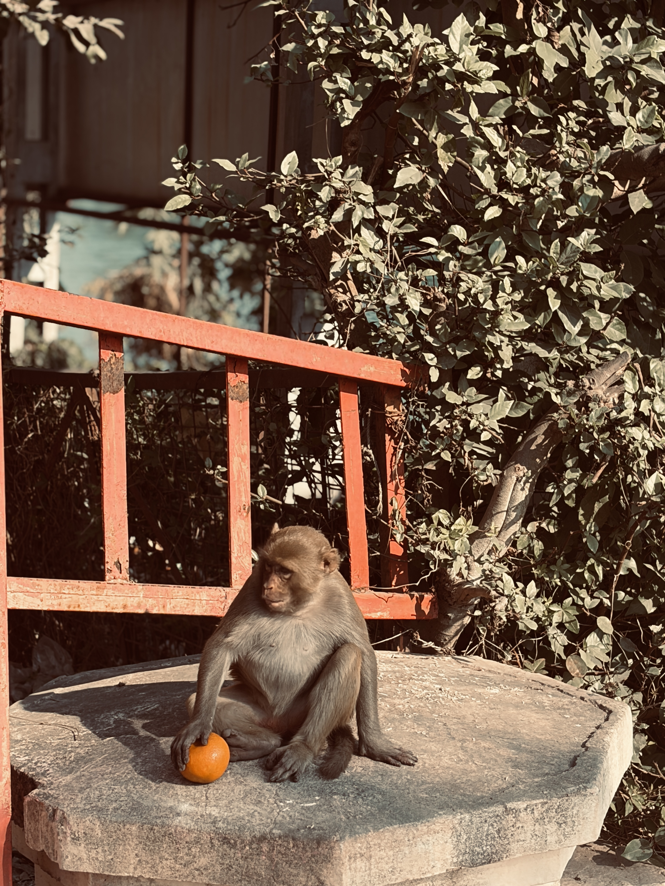
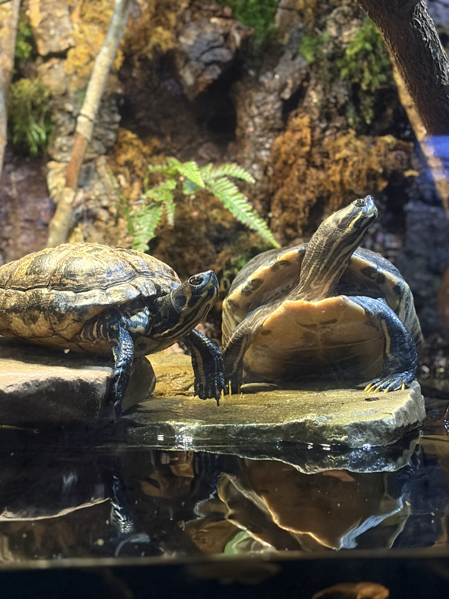
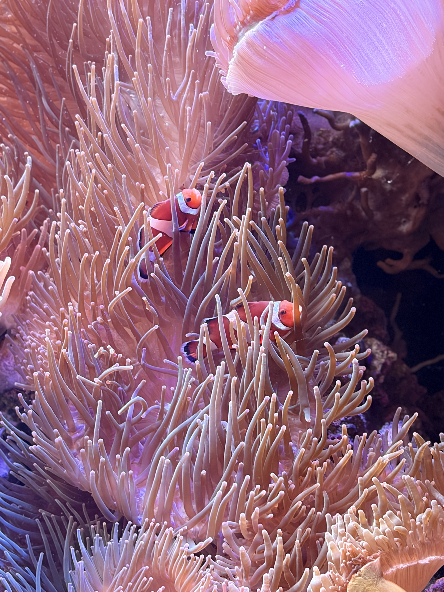
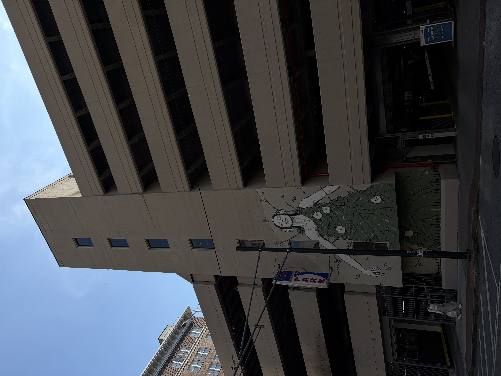

Hobbies & Interests
Piano
Beyond research and coding, I find solace in playing the piano. Music offers a creative outlet that complements my technical work, providing balance and a meditative escape from complex problem-solving. Classical and contemporary compositions are my favorites.
Photography
I'm passionate about capturing moments through photography. From landscape and nature photography to macro details, I enjoy exploring the world through the lens. Photography teaches me to observe details and find beauty in unexpected places—skills that translate well to scientific research.
Photography Gallery





Software Projects
Open-source tools I've developed for bioprocessing and data analysis
PEEKer
A comprehensive tool designed for analyzing and extracting data from bioprocessing experiments. PEEKer streamlines the workflow for processing analytical data with intuitive interfaces and powerful computational backends.
SpectrTwin
A digital twin and predictive modeling platform for spectroscopic analysis in bioprocessing. SpectrTwin leverages machine learning to predict process parameters and quality attributes in real-time. Accessible both as a Python package and through an interactive Streamlit application.